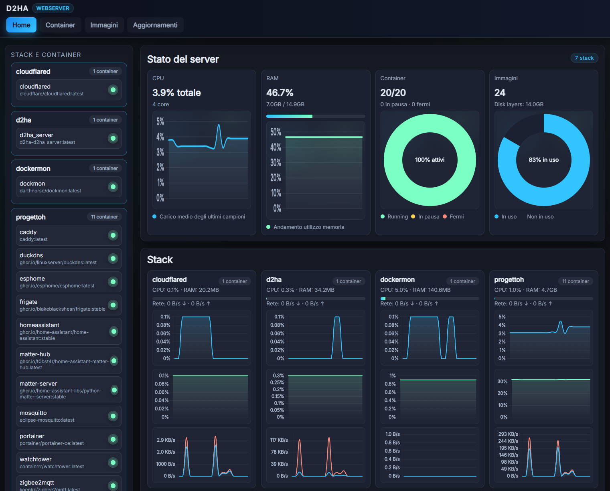
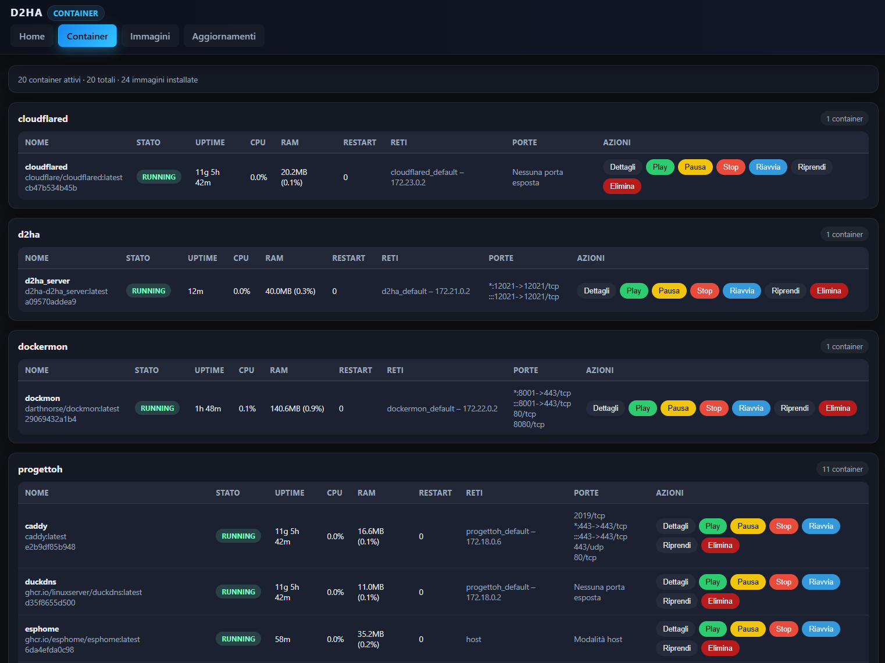
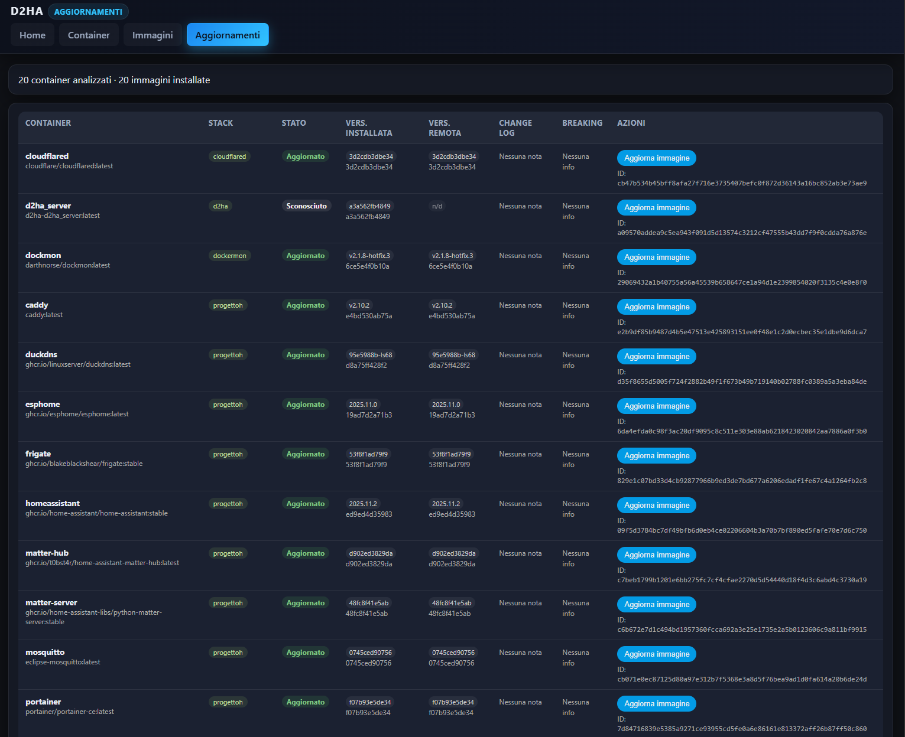
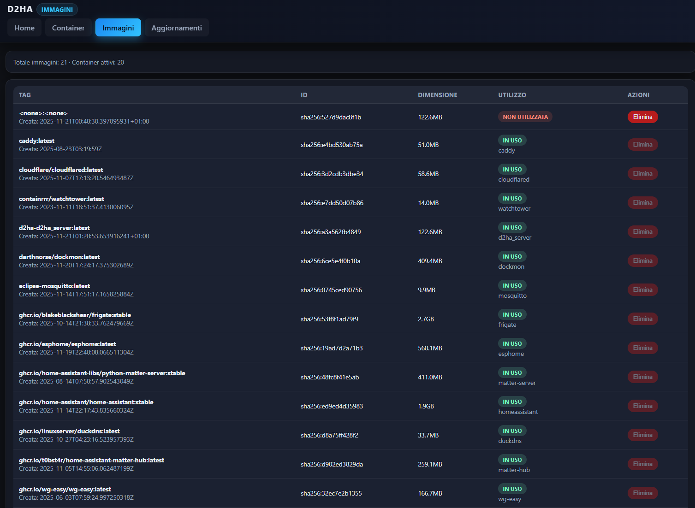

Live dashboard
Real-time CPU, RAM and network stats for every container, at a glance.
A modern web UI to monitor and control your Docker containers — with MQTT autodiscovery that turns every container into Home Assistant entities, automatically.
From live stats to Home Assistant integration — in one clean, self-hosted UI.
Real-time CPU, RAM and network stats for every container, at a glance.
Start, stop, restart and inspect containers instantly — no terminal needed.
Sensors and switches appear in Home Assistant automatically, with stable IDs.
Check for image updates and apply them with live progress feedback.
Two-factor authentication, secure mode and HTTPS support out of the box.
Add it to your home screen and use it like a native app, on any device.
Clean Material-inspired UI, available in light and dark themes.




Point it at your Docker socket and open the UI. That’s it.
# run d2ha
docker run -d -p 12021:12021 \
-v /var/run/docker.sock:/var/run/docker.sock:ro \
ghcr.io/arborae/docker2homeassistant:latest
Then open http://localhost:12021 —
for Docker Compose, environment variables and first-login credentials, see the
installation guide.
Issues and small, focused PRs are always welcome.